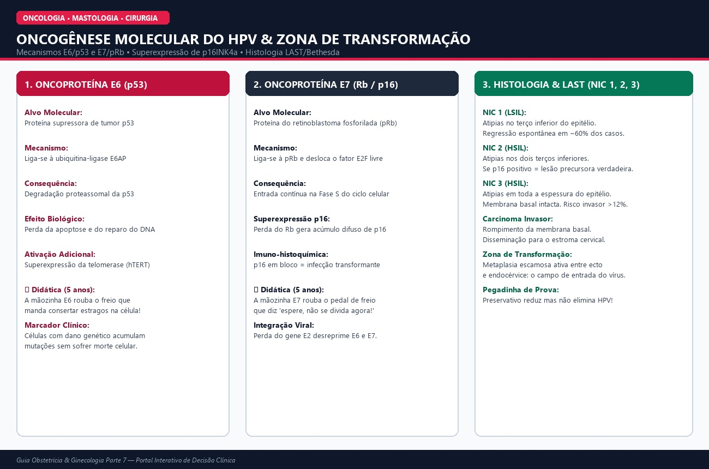

Módulo 61
ASCCP • WHO • Bethesda
HPV, Oncogênese Molecular (E6/p53, E7/Rb) e Zona de Transformação
🎈 Didática para Criança de 5 Anos: O Ladrão de Freios
Toda célula é como um carrinho com dois freios: o freio p53 ("pare e conserte o estrago!") e o freio Rb ("espere, ainda não é hora de se dividir!"). O HPV de alto risco é um ladrão de freios. A mãozinha E6 rouba o p53, e a mãozinha E7 rouba o Rb. Sem freios, o carrinho acelera descontrolado e bate: vira câncer! Como isso leva 10 a 20 anos, o exame preventivo acha o carrinho com defeito bem antes da batida!

🔍 Toque na imagem para ampliar em alta definição
Mecanismo Molecular de Alta Complexidade (Ivy League)
- E6: liga-se à E6AP induzindo degradação de p53 no proteassoma; ativa hTERT.
- E7: liga-se a pRb e libera E2F; induz acúmulo de p16INK4a (marcador p16 em bloco).
- Integração: quebra do gene viral E2 desreprime a síntese de E6 e E7.
Classificação Histológica (LAST / OMS)
- NIC 1 (LSIL): terço inferior do epitélio; 60% regridem espontaneamente.
- NIC 2 (HSIL): até dois terços; lesão precursora verdadeira se p16 positivo.
- NIC 3 (HSIL): espessura total com membrana basal íntegra; risco invasor > 12%.